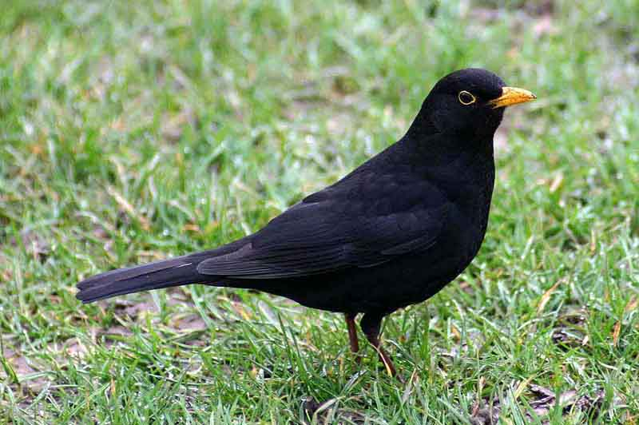

Általános tudnivalók

A rigófélék a madarak osztályának verébalakúak rendjébe tartozó család.
A családhoz tartozó fajok száma rendszerenként változó. Törendszer az
itt jelenleg felsorolt fajokon kívül ide sorolja a légykapófélék
családjának egyik teljes alcsaládját is. A korábbi rendszerekben ezek
a fajok a Saxicolinae alcsalád tagjai valamennyien a rigófélékközé tartoztak
és alcsaládi szinten is elkülönültek a klasszikus értelemben vett rigóktól,
melyek ma is e család tagjai. Azokat ekkor rigóformák néven különítették el
alcsaládi szinten a többi fajtól. Később lezajlott molekuláris vizsgálatok eredményei
alapján a Saxicolinae alcsalád tagjait áthelyezték a légykapófélék közé.
Áthelyezésük nem talált teljes egyetértésre a taxonómusok között, mivel ökológiai
és viselkedéstani alapon legalább ugyanolyan közel állnak ezek a fajok a rigókhoz,
mint a légykapókhoz.
Kék kövirigó
A kék kövirigó (Monticola solitarius) a madarak osztályának verébalakúak (Passeriformes) rendjébe és a légykapófélék (Muscicapidae) családjába tartozó faj.
Málta nemzeti madara. Európa déli, Ázsia északnyugati részén él, ősszel délebbre vonul, eljut Észak-Afrikába, Indiába és Ázsia délkeleti területeire is. Víz közeli sziklafalak lakója, 3000 méter magas völgyekben is előfordul. A talajon keresgéli rovarokból álló táplálékát, néha a gyíkot is megfogja, de bogyókat is elfogyasztja. Májusban sziklarepedésekbe, üregekbe rakja fészkét. Fészekalja 4-5 tojásból áll, melyen 12-13 napig kotlik. A fiókák még 18 napig maradnak a fészekben, a szülők még egy ideig utána is gondoskodnak róluk.
Magyarországon ritka, alkalmi vendég. 1975. májusában a Ságon észlelték, de nem került megerősítésre. Egy újabb előfordulása a 2006 áprilisából, a Nagyharsány határában emelkedő Szársomlyóról ismert (Ónodi Miklós fotói), ezt tekinti a Magyar Madártani és Természetvédelmi Egyesület Nomenclator Bizottsága a faj első hitelesített hazai előfordulásának.
Vörösbegyű kékmadár
A vörösbegyű kékmadár avagy keleti kékmadár (Sialia sialis) a madarak osztályának verébalakúak (Passeriformes) rendjébe és a rigófélék (Turdidae) családjába tartozó faj.
A fajt Carl von Linné svéd természettudós írta le 1758-ban, és a Motacilla nembe sorolta Motacilla sialis néven .Kanada, az Amerikai Egyesült Államok, Mexikó, Belize, Bermuda, Guatemala, Honduras és Nicaragua és Salvador területén honos. Kóborlóként előfordul Kubában, a Saint-Pierre és Miquelonon és az Amerikai Virgin-szigeteken is.
Természetes élőhelyei a tűlevelű erdők, mérsékelt övi erdők, szubtrópusi vagy trópusi hegyi esőerdők, cserjések és mocsarak, valamint ültetvények. Vonuló faj.
Tavasszal és nyáron főként ízeltlábúakkal táplálkozik, ősszel gyümölcsökkel egészíti ki.
Fészekalja 4-5 palakék tojásból áll, melyen 11-19 napig kotlik.
Elterjedési területe rendkívül nagy, egyedszáma növekvő. A Természetvédelmi Világszövetség Vörös listáján nem fenyegetett fajként szerepel.